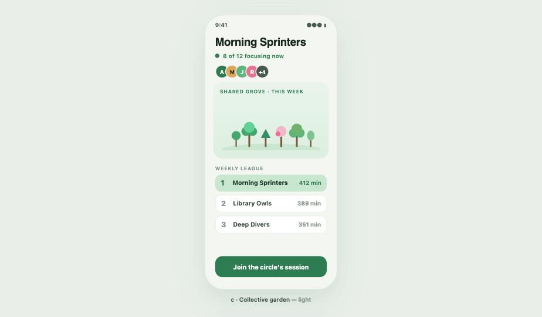
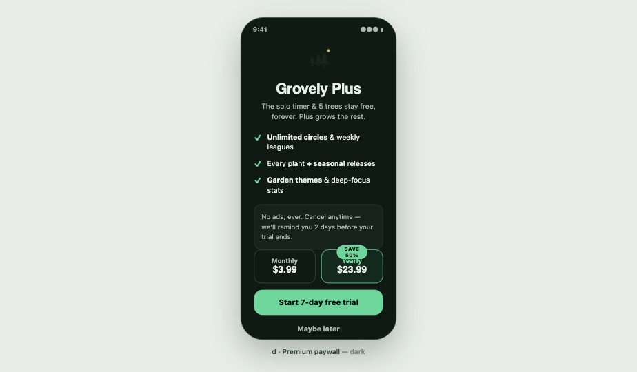

Calmo por fora, vivo por dentro.




Cada minuto de foco planta uma árvore. Cultive seu jardim, foque com seu círculo e veja o bosque de vocês tomar forma — uma sessão por vez.
Em breve no Google Play · grátis para focar sozinho, para sempre
Defina a duração da sessão — 15 a 60 minutos — e plante. Cada espécie cresce do broto à copa enquanto você trabalha.
Sair do app antes da hora? A árvore murcha. Sem culpa, sem drama — mas o seu jardim lembra quem ficou.
Cada sessão vira uma árvore permanente no seu jardim, com streaks, espécies raras e um recap semanal pra compartilhar.


Sim — o timer, o jardim completo e 1 círculo são grátis para sempre. O Grovely Plus desbloqueia círculos ilimitados, todas as espécies, durações personalizadas e estatísticas avançadas, com trial de 21 dias.
A árvore murcha. Trocas rápidas de app (uma ligação, uma notificação) têm carência — só desistir de verdade murcha a árvore. E dá pra reviver assistindo um vídeo.
Não pra começar: você entra e planta na hora. Conta só é necessária pra entrar num círculo e sincronizar entre aparelhos.
Compartilhamos com o seu círculo apenas primeiro nome e contagem de árvores. Sem feed, sem DM, sem exposição.
Android primeiro. iOS vem depois do lançamento — entre na lista pra saber na hora.
Beta fechado no Android em breve. Deixe seu e-mail e a gente te chama quando abrir uma vaga.
Entrar na lista de espera